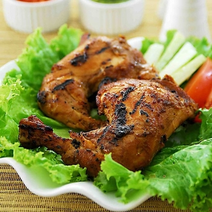

Ayam bakar adalah sebuah hidangan Asia Tenggara Maritim, terutama hidangan Indonesia atau Malaysia, dari ayam yang dipanggang di atas arang salah satu makanan terenak di indinesia
Rating : 9/10
Rarga : Rp.16000-25000
Ongkos kirim : Rp.5000
Pilihan pengiriman : gofood, grabfood
Ayam goreng Nusantara adalah hidangan Asia Tenggara yang merupakan ayam yang digoreng dalam minyak goreng. Dalam dunia internasional, istilah ayam goreng merujuk kepada ayam goreng gaya Nusantara
Rating : 8.8/10
Rarga : Rp.11000-20000
Ongkos kirim : Rp.5000
Pilihan pengiriman : gofood, grabfood
Ayam Geprek adalah sajian makanan ayam goreng tepung dengan cara digeprek/ditumbuk dengan ulekan bersamaan dengan sambalnya hingga daging menjadi rata. Makanan khas kota Yogyakarta ini memang sudah dikenal oleh banyak masyarakat
Rating : 9.2/10
Rarga : Rp.17000-35000
Ongkos kirim : Rp.5000
Pilihan pengiriman : gofood, grabfood